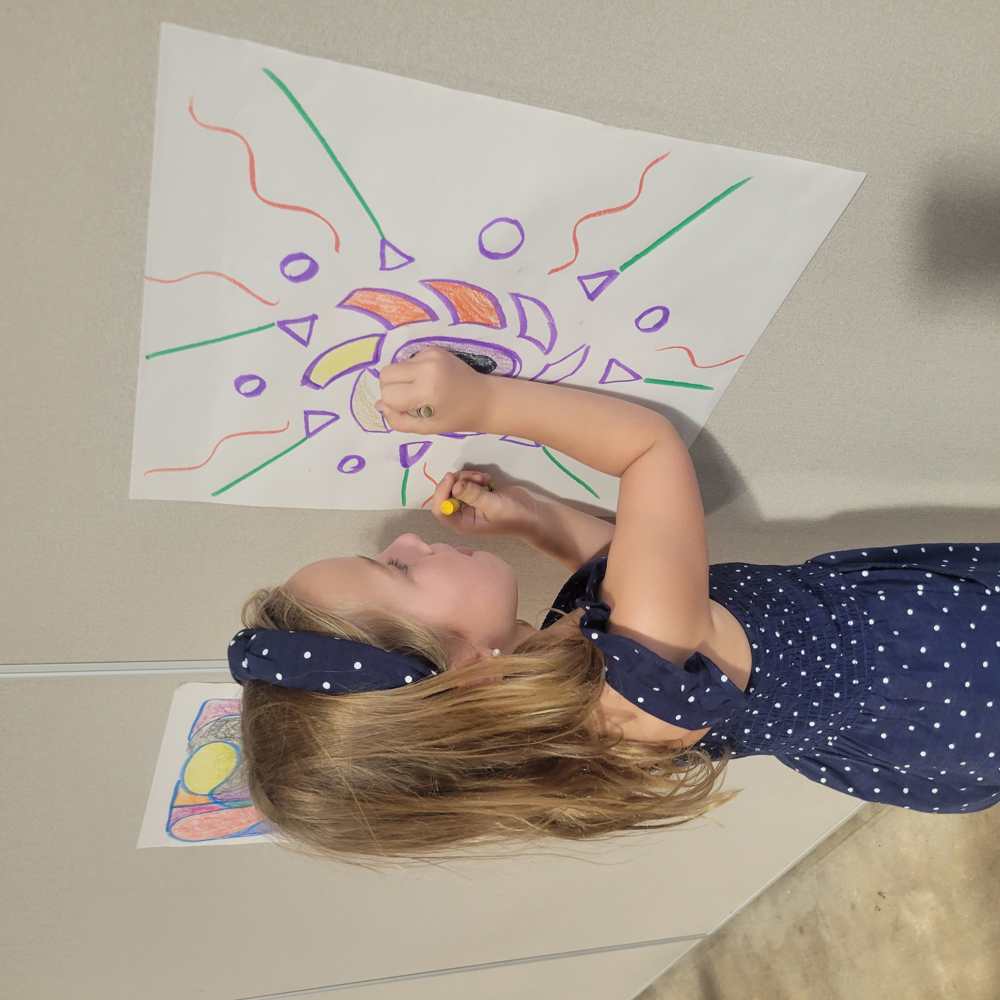
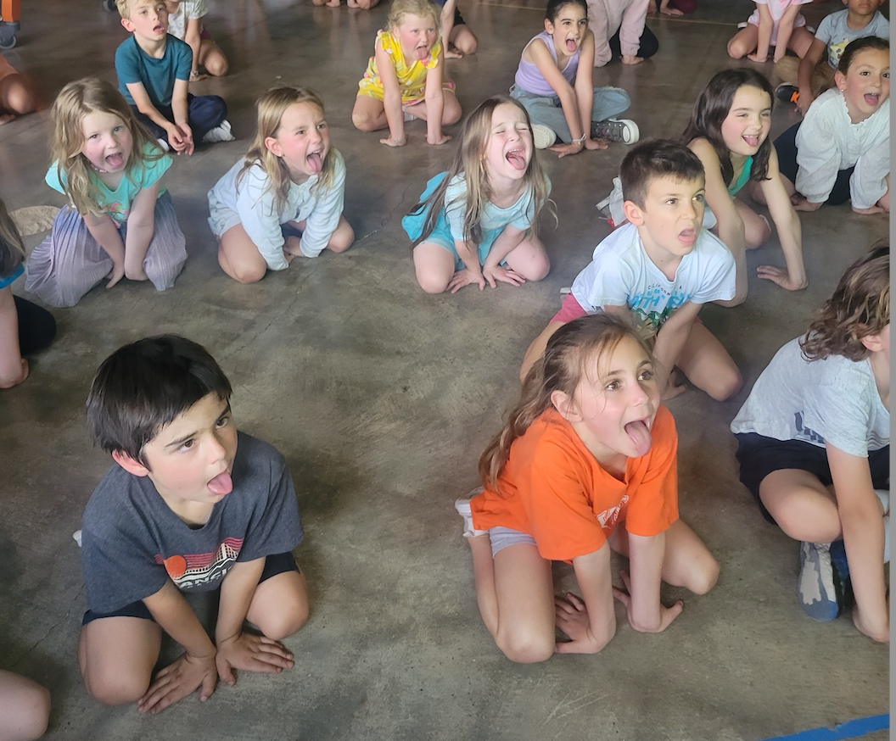

Life at Kidsnetic



Kidsnetic Mindfulness Club is a structured after-school program in Austin serving elementary-aged children (K–5). We combine mindfulness, social-emotional learning, creative art, movement, and group games in a safe and supportive environment.
Request InfoChildren learn emotional awareness, calming tools, empathy, respect, and problem-solving skills.
Hands-on art projects that encourage self-expression, focus, and confidence.
Yoga, stretching, and cooperative group games that build teamwork and healthy movement.
We are hiring dependable, energetic staff to support our after-school program. Ideal for future educators or child-development professionals.
Email to apply: kidsneticmc@gmail.com
Phone: (512) 470-5006
Subject line: Kidsnetic After-School Staff Application